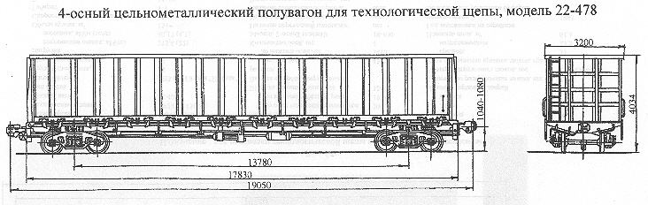

Назначение: для перевозки технологической щепы и короткомерной древесины
Параметры
| Номер проекта | 478.00.000 |
| Технические условия | ТУ 24-5-203-70 |
| Модель вагона | 22-478 |
| Тип вагона | 916 |
| Изготовитель | ДВЗ им. Газеты "Правда" |
| Грузоподъемность, т | 58 |
| Масса тары вагона, т | 25,85 |
| Нагрузка: статическая осевая, кН(тс) |
205,8(21) |
| погонная, кН/м(тс/м) | 43,22(4,4) |
| Объем кузова, м3 | 135 |
| Скорость конструкционная, км/ч | 120 |
| Габарит | 1-Т |
| База вагона, мм | 13780 |
| Длина, мм: по осям сцепления автосцепок |
19050 |
| по концевым балкам рамы | 17830 |
| Ширина максимальная, мм | 3200 |
| Высота от уровня верха головок рельсов, мм: максимальная |
4034 |
| до нижней обвязки | 1440 |
| Количество осей, шт. | 4 |
| Модель 2-осной тележки | 18-100 |
| Наличие переходной площадки | нет |
| То же с ручным тормозом | нет |
| Наличие стояночного тормоза | есть |
| Внутренние размеры кузова, мм: ширина |
3080 |
| длина | 17248 |
| высота | 2610 |
| Наличие торцовых дверей | нет |
| Количество разгрузочных люков, шт. | 20 |
| Размер разгрузочных люков, мм | 1327х1540 |
| Угол открывания крышек люков, град.: средних |
33 |
| надтележечных | 24 |
| Площадь пола, м2 | 53,2 |
| Год постановки на серийное производство | 1970 |
| Возможность установки буферов | нет |